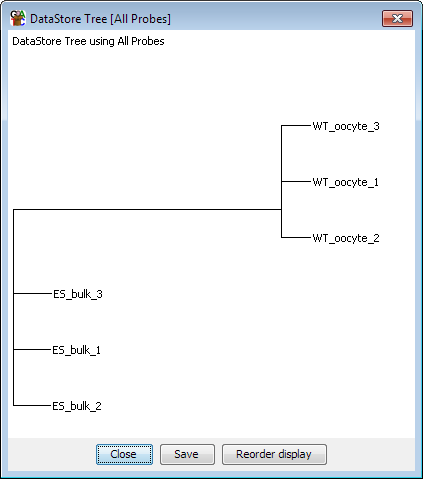

The DataStore tree view is a very quick way of being able to see the degree of relatedness of several DataStores

This view uses a Pearson correlation to calculate a distance matrix between all of the currently visible data stores. It then constructs a neighbour joining tree from the matrix.
You need to have at least 3 visible quantitated DataStores to draw a tree. To begin drawing your tree select Plots > DataStore Tree from the main menu.
Once you have drawn the tree you can use the "Reorder" button at the bottom to change the order of your visible data tracks to reflect the correlations found in the tree.